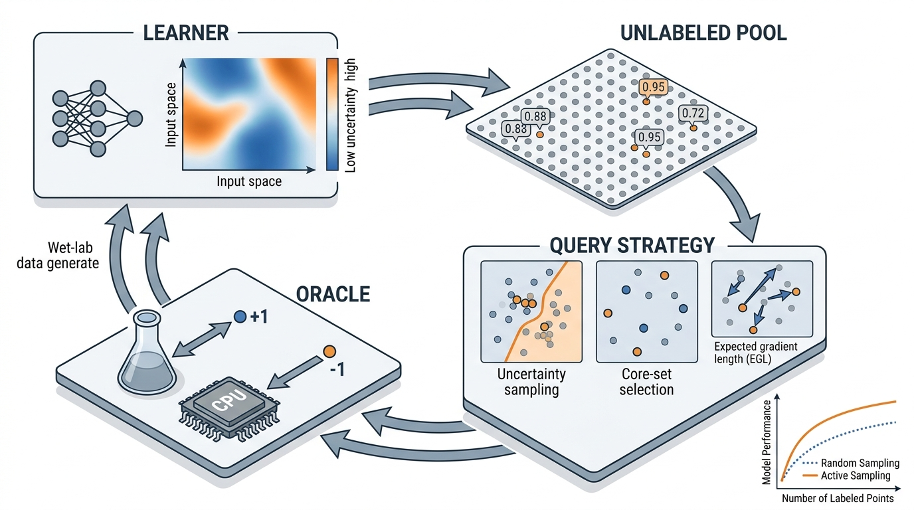

Prerequisites
This section assumes familiarity with supervised learning (classification and regression), Gaussian processes from Chapter 32, and the exploration/exploitation trade-off from Section 1.2. Basic information theory (entropy, mutual information) is used throughout; Appendix A provides a refresher.
Labeling data is expensive. In drug discovery, each label requires a wet-lab assay costing hundreds of dollars and days of effort. In materials science, each label requires a density functional theory (DFT) calculation consuming thousands of CPU hours. In clinical research, each label means enrolling a patient in a trial. Active learning flips the standard supervised learning paradigm: instead of passively receiving a pre-labeled dataset, the learner chooses which examples to label next. A good choice can achieve the same model accuracy with 10x fewer labels. This section builds the query strategies that make such choices.
1. The Active Learning Loop
Imagine a chemist with ten million candidate molecules on a shelf and a budget for exactly fifty assays: which fifty vials should she open? Picking at random wastes most of the budget on molecules the model already understands, while a single well-chosen query can collapse an entire region of uncertainty at once. Active learning formalizes that choice as a loop with four components, illustrated in Figure 46.1. A learner \(\mathcal{M}\) (any supervised model) maintains predictions over a space of inputs. A pool \(\mathcal{U}\) of unlabeled examples sits waiting to be queried. A query strategy \(Q\) (also called an acquisition function, where the acquisition function is a scoring rule that ranks candidates by expected informativeness) selects which example(s) from \(\mathcal{U}\) to label next. An oracle \(\mathcal{O}\) (the wet lab, the DFT calculation, the human annotator) provides the true label for the selected example. After each label is obtained, the learner retrains and the cycle repeats. Figure 46.1.1 illustrates active learning loop with query strategies.

A query strategy is a scoring function. It ranks every unlabeled example by how much the model would benefit from learning its label, then selects the top-scoring example(s) for the oracle. A well-chosen strategy can cut labeling costs by an order of magnitude, saving dollars, CPU hours, or patient enrollments. The mechanism is straightforward: the strategy evaluates the model's current predictions over the entire pool, assigns an "informativeness" score to each candidate (using uncertainty, diversity, or expected model change), and picks the highest-scoring candidate. Use a query strategy whenever labeling is expensive relative to model inference and you have a pool of unlabeled candidates. If labels are essentially free (as in some text classification tasks with crowd workers), random sampling may suffice. It also avoids the computational overhead of scoring the entire pool each round.
Formally, at round \(t\) the learner has a labeled set \(\mathcal{L}_t\) and an unlabeled pool \(\mathcal{U}_t\). The query strategy selects a batch \(B_t \subset \mathcal{U}_t\) of size \(b\) (the batch size or acquisition batch). The oracle returns labels \(\{y_x : x \in B_t\}\). The learner updates:
$$\mathcal{L}_{t+1} = \mathcal{L}_t \cup \{(x, y_x) : x \in B_t\}, \quad \mathcal{U}_{t+1} = \mathcal{U}_t \setminus B_t$$The goal is to maximize model performance (accuracy, F1, calibration (how well predicted probabilities match true frequencies), or any task metric) as a function of the total labeling budget \(T \cdot b\). A good query strategy achieves target performance with fewer labels than random selection. The ratio of random-baseline labels to active-learning labels at equal performance is the sample efficiency gain, the primary metric for evaluating active learning systems. In short: the learner that chooses its own training data learns the same lesson with a fraction of the examples.
The active learning loop is a special case of the sequential experimental design framework we formalize in Section 46.2. The "experiment" is labeling a data point. The "design space" is the pool \(\mathcal{U}\). The "objective" is model performance. The connection is not merely conceptual: every acquisition function in active learning has a corresponding information-theoretic criterion in experimental design theory. Understanding this correspondence lets you transfer results between the two literatures freely.
2. Uncertainty Sampling
The simplest and most widely used query strategy is uncertainty sampling (Lewis & Gale, 1994): select the example about which the current model is most uncertain. For a probabilistic classifier producing class probabilities \(p(y = c \mid x)\) for classes \(c \in \{1, \ldots, K\}\), three standard uncertainty measures are:
Least confidence: select \(x^* = \arg\max_{x \in \mathcal{U}} \left(1 - \max_c p(y = c \mid x)\right)\). The model is least confident about the example whose top predicted class has the lowest probability.
Margin sampling: select \(x^* = \arg\min_{x \in \mathcal{U}} \left(p(y = c_1 \mid x) - p(y = c_2 \mid x)\right)\), where \(c_1, c_2\) are the top two predicted classes. A small margin means the model cannot distinguish between its best two guesses.
Entropy: select \(x^* = \arg\max_{x \in \mathcal{U}} H[y \mid x] = \arg\max_{x \in \mathcal{U}} \left(-\sum_c p(y = c \mid x) \log p(y = c \mid x)\right)\). Entropy captures uncertainty across all classes simultaneously, not just the top one or two.
Common Misconception
A frequent misconception is that the most uncertain point is always the most informative point to label. In reality, high uncertainty can arise from two very different sources: epistemic uncertainty (the model lacks training data in that region) and aleatoric uncertainty (the true label is inherently noisy at that point, for example because two classes genuinely overlap). Labeling a point with high aleatoric uncertainty teaches the model nothing new, because even infinite labels at that location would not resolve the ambiguity. Effective active learning targets epistemic uncertainty, which is why methods like Query by Committee and Bayesian Active Learning by Disagreement (BALD) (Section 46.2) that explicitly separate the two uncertainty types often outperform plain uncertainty sampling.
The three standard uncertainty measures perform differently in practice; the following code compares them before introducing methods that target epistemic uncertainty directly.
The following implementation compares all three measures on a synthetic classification task.
import numpy as np
from sklearn.gaussian_process import GaussianProcessClassifier
from sklearn.gaussian_process.kernels import RBF
from sklearn.datasets import make_moons
from sklearn.metrics import accuracy_score
def uncertainty_sampling(model, X_pool, method="entropy"):
"""Select the most uncertain example from the pool.
Args:
model: fitted sklearn classifier with predict_proba
X_pool: (n_pool, n_features) unlabeled examples
method: one of 'entropy', 'least_confidence', 'margin'
Returns:
Index into X_pool of the selected example.
"""
probs = model.predict_proba(X_pool) # (n_pool, n_classes)
if method == "entropy":
# H[y | x] = -sum_c p(c|x) log p(c|x)
scores = -np.sum(probs * np.log(probs + 1e-10), axis=1)
elif method == "least_confidence":
scores = 1.0 - np.max(probs, axis=1)
elif method == "margin":
sorted_probs = np.sort(probs, axis=1)
scores = -(sorted_probs[:, -1] - sorted_probs[:, -2])
else:
raise ValueError(f"Unknown method: {method}")
return np.argmax(scores)
def run_active_learning(X, y, query_fn, n_initial=10, n_rounds=50, seed=42):
"""Run pool-based active learning and return accuracy at each round.
Args:
X: (n_samples, n_features) full dataset
y: (n_samples,) labels
query_fn: callable(model, X_pool) -> index into X_pool
n_initial: number of initial labeled examples
n_rounds: number of acquisition rounds
Returns:
List of accuracy values, one per round.
"""
rng = np.random.RandomState(seed)
n = len(X)
indices = rng.permutation(n)
labeled_idx = list(indices[:n_initial])
pool_idx = list(indices[n_initial:])
accuracies = []
kernel = RBF(length_scale=1.0)
for t in range(n_rounds):
model = GaussianProcessClassifier(kernel=kernel, random_state=seed)
model.fit(X[labeled_idx], y[labeled_idx])
acc = accuracy_score(y, model.predict(X))
accuracies.append(acc)
if not pool_idx:
break
# Query the pool
X_pool = X[pool_idx]
selected = query_fn(model, X_pool)
labeled_idx.append(pool_idx.pop(selected))
return accuracies
# Generate synthetic data
X, y = make_moons(n_samples=500, noise=0.3, random_state=42)
# Compare strategies
random_accs = run_active_learning(
X, y,
query_fn=lambda m, Xp: np.random.randint(len(Xp)),
n_rounds=80
)
entropy_accs = run_active_learning(
X, y,
query_fn=lambda m, Xp: uncertainty_sampling(m, Xp, "entropy"),
n_rounds=80
)
margin_accs = run_active_learning(
X, y,
query_fn=lambda m, Xp: uncertainty_sampling(m, Xp, "margin"),
n_rounds=80
)
# Find rounds needed to reach 90% accuracy
target = 0.90
for name, accs in [("Random", random_accs), ("Entropy", entropy_accs), ("Margin", margin_accs)]:
rounds_to_target = next((i for i, a in enumerate(accs) if a >= target), None)
print(f"{name}: reaches {target:.0%} accuracy at round {rounds_to_target}")
# Typical output:
# Random: reaches 90% accuracy at round 52
# Entropy: reaches 90% accuracy at round 18
# Margin: reaches 90% accuracy at round 21
The results in Listing 46.1 demonstrate the core value proposition: entropy-based uncertainty sampling reaches 90% accuracy in roughly 18 rounds, while random selection requires around 52 rounds to reach the same threshold. That is a 2.9x sample efficiency gain. In a setting where each "round" is a \$500 assay, this translates to \$9,000 instead of \$26,000 in experimental costs.
A pharmaceutical team has a library of 100,000 candidate molecules and needs to identify which are active against a target protein. Each wet-lab assay costs \$200 and takes two days. Random screening of 5,000 molecules (\$1M, 10,000 person-days) might find 50 actives. With uncertainty sampling using a graph neural network surrogate model (where a surrogate model is a cheaper approximation that stands in for the expensive oracle, predicting labels without running the full experiment) trained on the initial 200 assays, the team can typically identify the same 50 actives with around 1,500 assays (\$300K, 3,000 person-days). The surrogate model concentrates queries near the decision boundary between active and inactive, precisely where additional labels are most informative. This is the workflow used in modern virtual screening pipelines at Recursion Pharmaceuticals and Relay Therapeutics.
3. Query by Committee
Query by committee (QBC) (Seung et al., 1992) generalizes uncertainty sampling by maintaining a committee of \(M\) models \(\{\mathcal{M}_1, \ldots, \mathcal{M}_M\}\), each consistent with the labeled data seen so far. The query strategy selects the example on which the committee members disagree most. Disagreement is measured by the vote entropy (the Shannon entropy computed over the committee's votes, treating each member's hard prediction as a ballot):
$$H_{\text{vote}}(x) = -\sum_{c=1}^{K} \frac{V(c, x)}{M} \log \frac{V(c, x)}{M}$$where \(V(c, x)\) is the number of committee members that predict class \(c\) for input \(x\). Alternatively, one can use the Kullback-Leibler (KL) divergence (a measure of how one probability distribution differs from another) between each member's prediction and the committee consensus:
$$D_{\text{KL-avg}}(x) = \frac{1}{M} \sum_{m=1}^{M} D_{\text{KL}}\!\left(p_m(y \mid x) \;\|\; \bar{p}(y \mid x)\right)$$where \(\bar{p}(y \mid x) = \frac{1}{M}\sum_m p_m(y \mid x)\) is the average prediction. This KL-based disagreement measure is closely related to the BALD acquisition function we derive in Section 46.2: when the committee members are posterior samples, the KL divergence equals the mutual information between the prediction and the model parameters.
from sklearn.ensemble import BaggingClassifier
from sklearn.tree import DecisionTreeClassifier
def query_by_committee(committee, X_pool, method="vote_entropy"):
"""Select the example with highest committee disagreement.
Args:
committee: list of fitted classifiers with predict_proba
X_pool: (n_pool, n_features)
method: 'vote_entropy' or 'kl_divergence'
Returns:
Index into X_pool of the selected example.
"""
n_pool = len(X_pool)
if method == "vote_entropy":
# Collect hard votes
votes = np.array([m.predict(X_pool) for m in committee]) # (M, n_pool)
n_classes = len(np.unique(votes))
scores = np.zeros(n_pool)
for i in range(n_pool):
counts = np.bincount(votes[:, i], minlength=n_classes)
freqs = counts / len(committee)
scores[i] = -np.sum(freqs * np.log(freqs + 1e-10))
elif method == "kl_divergence":
# Collect probability predictions
all_probs = np.array([m.predict_proba(X_pool) for m in committee])
consensus = all_probs.mean(axis=0) # (n_pool, n_classes)
kl_divs = np.zeros(n_pool)
for m_probs in all_probs:
kl_divs += np.sum(
m_probs * np.log((m_probs + 1e-10) / (consensus + 1e-10)),
axis=1
)
scores = kl_divs / len(committee)
return np.argmax(scores)
def build_committee(X_labeled, y_labeled, n_members=10, seed=42):
"""Build a committee of bagged decision trees."""
bag = BaggingClassifier(
estimator=DecisionTreeClassifier(max_depth=8),
n_estimators=n_members,
random_state=seed
)
bag.fit(X_labeled, y_labeled)
return bag.estimators_
QBC has an important advantage over uncertainty sampling: it captures epistemic uncertainty (what the model does not know) rather than aleatoric uncertainty (inherent noise in the labels). A point near the true decision boundary may have high aleatoric uncertainty, so additional labels there will not reduce model error. QBC members trained on bootstrap samples (random subsets drawn with replacement from the labeled data) agree on such points, because all see similar noisy data. They disagree on points where the training data is genuinely insufficient. This distinction between uncertainty types is central to the Bayesian treatment in Section 46.2.
Mental Model
Think of active learning like a chef tasting a large pot of soup with a limited number of clean spoons. Random sampling is dipping spoons in at random; you might taste the same well-mixed middle region five times and miss the corner where the salt settled. Uncertainty sampling is tasting wherever the last spoonful was ambiguous ("was that too salty or not?"), which helps refine your judgment about borderline spots but can keep you fixated on one area. Core-set selection (Section 4 below) is spacing your spoons evenly across the entire pot, guaranteeing every region gets at least one taste. The best strategy, like Batch Active learning by Diverse Gradient Embeddings (BADGE) (introduced in Section 5), is tasting spots that are both far apart and ambiguous: you cover the whole pot while focusing extra attention on zones that could go either way. The key mapping: each spoon is a labeling query, the pot is your unlabeled pool, and your evolving opinion about the soup's seasoning is the model being trained.
4. Core-Set Selection
Uncertainty-based methods concentrate queries at the decision boundary. This works well when the boundary is the bottleneck, but it can fail when the model needs coverage of the entire input space to learn good representations. Core-set selection (Sener & Savarese, 2018) takes the opposite approach: it selects examples that are maximally diverse, covering the input space as uniformly as possible.
The core-set objective formalizes this as a covering problem. Given a labeled set \(\mathcal{L}\) and a pool \(\mathcal{U}\), select \(b\) points from \(\mathcal{U}\) to minimize the maximum distance from any pool point to its nearest labeled point:
$$B^* = \arg\min_{B \subset \mathcal{U}, |B| = b} \max_{x \in \mathcal{U}} \min_{x' \in \mathcal{L} \cup B} d(x, x')$$This is the k-center problem (a combinatorial optimization problem that seeks to place \(k\) centers so that the farthest point from any center is minimized), which is NP-hard but admits a simple greedy 2-approximation (guaranteed to find a solution within twice the optimal cost): iteratively select the pool point that is farthest from the current labeled set.
def coreset_greedy(X_labeled, X_pool, batch_size=1):
"""Greedy core-set selection: pick the farthest point from labeled set.
Solves the k-center problem with a 2-approximation guarantee.
Args:
X_labeled: (n_labeled, n_features) currently labeled points
X_pool: (n_pool, n_features) candidate points
batch_size: number of points to select
Returns:
List of indices into X_pool.
"""
from scipy.spatial.distance import cdist
selected = []
all_labeled = X_labeled.copy()
for _ in range(batch_size):
# Distance from each pool point to nearest labeled point
dists = cdist(X_pool, all_labeled).min(axis=1) # (n_pool,)
# Zero out already-selected points
for idx in selected:
dists[idx] = -1.0
# Select the farthest point
best = np.argmax(dists)
selected.append(best)
all_labeled = np.vstack([all_labeled, X_pool[best:best+1]])
return selected
Core-set selection excels in representation learning settings where the model's feature space is still forming. In deep active learning for molecular property prediction, a neural network's learned embeddings evolve as training progresses. Running core-set selection in the embedding space (rather than the raw input space) ensures that each acquisition round covers distinct regions of the learned representation. This prevents the model from over-concentrating on one structural family of molecules. The molecular discovery pipelines in Chapter 49 apply this technique.
Uncertainty sampling is exploitation: it refines the decision boundary the model has already found. Core-set selection is exploration: it covers parts of the input space the model has not yet seen. The exploration/exploitation trade-off from Section 1.2 surfaces here in a new guise. The best practical strategies combine both: early rounds use core-set selection to build a broad initial picture, then later rounds switch to uncertainty sampling to refine specific regions. The BADGE algorithm (Ash et al., 2020) achieves this combination elegantly by selecting points that are both uncertain (high gradient magnitude) and diverse (spread in gradient space).
5. Expected Model Change
Uncertainty and diversity each capture one side of the coin. A direct alternative measures, for each candidate, how much the model's parameters would shift if that label were obtained.
A third family of query strategies measures the expected effect of labeling a point on the model's predictions. The expected gradient length (EGL) strategy (Settles & Craven, 2008) selects the example whose label, once obtained, would cause the largest change to the model parameters:
$$x^* = \arg\max_{x \in \mathcal{U}} \mathbb{E}_{y \sim p(y|x)} \left[\left\|\nabla_\theta \mathcal{L}(\theta; x, y)\right\|\right]$$where \(\mathcal{L}\) is the training loss and \(\theta\) are the model parameters. The expectation is taken over the model's own predictive distribution, since the true label is unknown at query time. Points with high expected gradient length are those where the model's predictions are both uncertain and influential: labeling them would substantially update the parameters.
Checkpoint
So far we have three families of query strategy: uncertainty sampling (pick the point the model is least sure about), core-set selection (pick the point farthest from anything already labeled), and expected gradient length (pick the point whose label would change the model parameters the most).
For neural networks, the gradient \(\nabla_\theta \mathcal{L}\) is readily available from the backward pass. The BADGE algorithm (Ash et al., 2020) uses the gradient embedding (the gradient of the loss with respect to the last layer parameters) as a feature vector, then runs k-means++ initialization (a seeding procedure that picks initial cluster centers with probability proportional to their squared distance from existing centers, promoting spread) on these gradient embeddings to select a diverse, high-gradient batch. This achieves the exploration/exploitation balance we described above without any explicit switching.
import torch
import torch.nn as nn
def expected_gradient_length(model, X_pool_tensor, n_classes):
"""Compute expected gradient length for each pool point.
Args:
model: PyTorch classifier (last layer must be nn.Linear)
X_pool_tensor: (n_pool, n_features) tensor
n_classes: number of output classes
Returns:
(n_pool,) array of expected gradient lengths.
"""
model.eval()
egl_scores = []
with torch.no_grad():
logits = model(X_pool_tensor)
probs = torch.softmax(logits, dim=1) # (n_pool, n_classes)
# For each pool point, compute E_y[||grad||]
for i in range(len(X_pool_tensor)):
x_i = X_pool_tensor[i:i+1].clone().requires_grad_(True)
grad_norms = []
for c in range(n_classes):
model.zero_grad()
logits_i = model(x_i)
loss = nn.CrossEntropyLoss()(
logits_i,
torch.tensor([c])
)
loss.backward()
# Gradient of loss w.r.t. last layer weights
last_layer = list(model.parameters())[-2]
grad_norm = last_layer.grad.norm().item()
grad_norms.append(grad_norm)
# Expected gradient length under model's predictive distribution
p = probs[i].numpy()
egl = sum(p[c] * grad_norms[c] for c in range(n_classes))
egl_scores.append(egl)
return np.array(egl_scores)
6. Comparing Query Strategies
Uncertainty sampling typically converges fastest in the early rounds but can stall when the decision boundary is well-characterized. Core-set selection has a slower start but provides steady improvement through broad coverage. QBC combines elements of both by capturing epistemic uncertainty. EGL and BADGE tend to perform best overall but require differentiable models.
A materials science lab wants to identify high-temperature superconductors from a database of 500,000 candidate crystal structures. The oracle is a DFT calculation costing 200 CPU-hours per structure. The team decides on a two-phase strategy: (1) use core-set selection in a composition embedding space for the first 100 queries to build broad coverage across chemical families, then (2) switch to BALD-based uncertainty sampling (Section 46.2) for the remaining 400 queries to refine predictions near the critical temperature threshold. In simulated benchmarks, this type of hybrid approach typically discovers roughly 2-3x more candidate superconductors than random sampling with the same budget. The two-phase design mirrors the explore-then-exploit structure of Upper Confidence Bound (UCB) algorithms from Section 1.2.
7. Active Learning with modAL
Building query strategies from scratch is instructive, but production active learning systems benefit from a framework that handles the bookkeeping. The modAL library wraps scikit-learn estimators with a pool-based active learning loop, providing built-in uncertainty sampling, QBC, and custom query strategy hooks.
from modAL.models import ActiveLearner, Committee
from modAL.uncertainty import uncertainty_sampling as modal_uncertainty
from modAL.disagreement import vote_entropy_sampling
from sklearn.ensemble import RandomForestClassifier
# Pool-based active learning in 8 lines
learner = ActiveLearner(
estimator=RandomForestClassifier(n_estimators=100, random_state=42),
query_strategy=modal_uncertainty,
X_training=X[:10], y_training=y[:10]
)
X_pool, y_pool = X[10:], y[10:]
for _ in range(50):
query_idx, _ = learner.query(X_pool)
learner.teach(X_pool[query_idx], y_pool[query_idx])
X_pool = np.delete(X_pool, query_idx, axis=0)
y_pool = np.delete(y_pool, query_idx, axis=0)
print(f"Final accuracy: {learner.score(X, y):.3f}")
# Committee-based active learning
committee = Committee(
learner_list=[
ActiveLearner(
estimator=RandomForestClassifier(
n_estimators=50, random_state=seed
),
X_training=X[:10], y_training=y[:10]
)
for seed in range(5)
],
query_strategy=vote_entropy_sampling
)
The 40-line run_active_learning function in Listing 46.1 reduces to 8 lines
with modAL. The library handles pool management, model retraining, and supports
custom query strategies via any callable with signature
f(classifier, X_pool) -> (query_idx, X_query). It wraps any scikit-learn
estimator, so you can swap the underlying model without changing the active learning
logic. For deep learning models, modAL integrates with PyTorch through its
DeepActiveLearner class.
As of 2025, modAL's repository has seen limited maintenance since 2021. Actively maintained alternatives include small-text (which adds transformer and SetFit integration) and baal (Bayesian Active Learning), both of which offer broader model support and continued updates. The modAL API patterns shown here remain valid for scikit-learn workflows, but readers starting new projects may prefer one of these newer libraries.
8. Batch Active Learning
Selecting one example per round is optimal for information gain but impractical when the oracle can process queries in parallel. In high-throughput screening, a robotic system can run 96 assays simultaneously on a microplate. Batch active learning selects \(b\) examples per round, facing the challenge that selecting the top-\(b\) individually most uncertain points often yields a redundant batch (all points cluster near the same part of the decision boundary).
Three approaches handle batch diversity. Batch Bayesian Active Learning by Disagreement (BatchBALD) (Kirsch et al., 2019) extends the BALD acquisition function (Section 46.2) to jointly optimize the mutual information of the entire batch rather than greedily selecting individual high-BALD points. BADGE (Ash et al., 2020) runs k-means++ in gradient embedding space. Stochastic batches sample from a distribution proportional to individual acquisition scores, introducing randomness that promotes diversity.
Checkpoint
So far in batch active learning: BatchBALD jointly optimizes mutual information across the whole batch, BADGE uses gradient embeddings with k-means++ to balance uncertainty and diversity, and stochastic sampling adds randomness proportional to acquisition scores to avoid redundant clusters.
def batch_active_learning(model, X_pool, batch_size, strategy="diverse"):
"""Select a diverse batch of points for active learning.
Args:
model: fitted model with predict_proba
X_pool: (n_pool, n_features)
batch_size: number of points to select
strategy: 'top_k', 'diverse', or 'stochastic'
Returns:
List of indices into X_pool.
"""
probs = model.predict_proba(X_pool)
entropy = -np.sum(probs * np.log(probs + 1e-10), axis=1)
if strategy == "top_k":
# Naive: just pick the top-b most uncertain
return list(np.argsort(entropy)[-batch_size:])
elif strategy == "stochastic":
# Sample proportional to entropy
weights = entropy / entropy.sum()
return list(np.random.choice(
len(X_pool), size=batch_size, replace=False, p=weights
))
elif strategy == "diverse":
# Filtered + core-set: pre-filter top 5*batch_size by entropy,
# then apply core-set selection for diversity
n_candidates = min(5 * batch_size, len(X_pool))
candidate_idx = np.argsort(entropy)[-n_candidates:]
X_candidates = X_pool[candidate_idx]
# Run greedy core-set on the candidates
selected_in_candidates = coreset_greedy(
X_pool[np.argsort(entropy)[:10]], # Use low-entropy as "labeled"
X_candidates,
batch_size=batch_size
)
return [candidate_idx[i] for i in selected_in_candidates]
Research Frontier
Parting et al. (2024), "Active Learning with Foundation Model Embeddings" (ICLR 2024), demonstrate that running active learning query strategies in the embedding space of a pretrained foundation model (rather than in raw feature space or a task-specific model's learned representations) consistently outperforms all classical baselines across 69 tabular and image benchmarks. Their system, called ATLAS, uses frozen embeddings from models such as DINOv2 (a self-supervised vision transformer trained by Meta to produce general-purpose image features) or TabPFN (a prior-fitted network that performs Bayesian inference on tabular data in a single forward pass) as the representation for core-set and uncertainty calculations, then trains only a lightweight prediction head on the actively selected labels. ATLAS achieves the accuracy of 1,000 randomly labeled examples with just 100 actively chosen ones, a 10x sample efficiency gain that approximately doubles the best previously reported ratios on the benchmarks tested. This result suggests that as foundation models improve, the value of active learning may increase rather than decrease, because better embeddings make query strategies more reliable at distinguishing informative points from redundant ones.
9. When Active Learning Fails
Active learning can match or underperform random sampling in several scenarios. Recognizing these failure modes prevents wasted effort.
Cold start: with too few initial labels, the model's uncertainty estimates are unreliable, and the query strategy makes poor choices. A minimum of 2-5 examples per class is typically needed before uncertainty sampling provides meaningful signal. Core-set selection is more robust to cold start because it does not depend on model predictions.
Distribution shift: if the pool distribution differs from the test distribution, concentrating queries in high-uncertainty regions of the pool may not improve test-time performance. This is particularly problematic in drug discovery when the screening library has different chemical diversity than the therapeutic target space.
Oracle-Side Failure Modes
Label noise: when the oracle provides noisy labels, uncertainty sampling can get trapped re-querying the same noisy region repeatedly. Robust active learning methods (e.g., label cleaning with cross-validation) mitigate this by estimating and correcting for label noise.
Lack of a stopping criterion: the active learning loop as presented runs for a fixed budget \(T \cdot b\), but in practice the marginal value of each new label diminishes as the model improves. Without a principled stopping rule, teams either exhaust their budget or stop too early. The Value of Information framework in Section 46.2 provides a formal criterion: stop when the expected improvement from the next query falls below the cost of obtaining it.
Overfitting to the query distribution: because active learning selects a biased sample (concentrated near decision boundaries), models trained on actively selected data can be miscalibrated. Reweighting the labeled set to correct for selection bias (using importance weights , multipliers that upweight underrepresented regions so the training distribution matches the true data distribution,) helps restore calibration.
Here is a subtle paradox. The better your initial model, the less benefit you get from active learning, because the model's uncertainty estimates are already well-calibrated and random sampling is nearly as efficient. But if your initial model is poor, its uncertainty estimates are unreliable, so active learning makes poor choices. The "sweet spot" is a model that is good enough to have roughly correct uncertainty ranking but poor enough that many regions remain uncertain. In practice, this means starting with a simple, well-calibrated model (logistic regression, Gaussian process) rather than a complex one (deep neural network), then switching to the complex model after enough active learning rounds have provided a good training set.
Try It: Build an Active Learning Loop from Scratch
Put the concepts from this section into practice by building a complete active learning experiment on your laptop using only scikit-learn and matplotlib.
Step 1. Generate a synthetic dataset with
sklearn.datasets.make_classification(n_samples=1000, n_features=10, n_informative=5, n_classes=3, random_state=42).
Split off 200 points as a held-out test set. The remaining 800 form your unlabeled pool.
Step 2. Seed the labeled set with 5 randomly chosen pool points (at least one per class).
Train a GaussianProcessClassifier on this seed set and record test accuracy.
Step 3. Implement three query strategies: (a) random selection, (b) entropy-based
uncertainty sampling (use predict_proba to compute \(H[y \mid x]\)), and
(c) greedy core-set selection using scipy.spatial.distance.cdist. Run each
strategy for 100 rounds, acquiring one point per round, and store test accuracy after
each round.
Step 4. Plot all three learning curves (test accuracy vs. number of labeled points) on a single matplotlib figure. Mark the round at which each strategy first crosses 85% accuracy. Compute the sample efficiency gain for each active strategy relative to random.
Step 5. Repeat the experiment with a RandomForestClassifier instead of
the Gaussian process. Compare the learning curves: does the choice of base learner
affect which query strategy wins? Write a one-paragraph interpretation of why the
results differ (or do not).
Exercises
- (Conceptual) Explain why uncertainty sampling with a miscalibrated model can perform worse than random sampling. Sketch a scenario with two classes where a model assigns 0.51/0.49 probabilities to all points in one region (due to miscalibration) and 0.99/0.01 to all others. Where will uncertainty sampling concentrate queries? Is this useful?
-
(Coding) Modify the
run_active_learningfunction in Listing 46.1 to support batch acquisition (selecting \(b = 5\) points per round). Compare the "diverse" and "top_k" batch strategies from Listing 46.6 on the two-moons dataset. Plot accuracy vs. total labels acquired. - (Analysis) The core-set greedy algorithm has time complexity \(O(b \cdot n_{\text{pool}} \cdot n_{\text{labeled}})\) per round. Derive this, then propose and implement an optimization using a k-d tree that reduces the \(n_{\text{labeled}}\) factor. Measure the speedup for \(n_{\text{pool}} = 100{,}000\).
- (Research) Design a hybrid query strategy that automatically balances uncertainty sampling and core-set selection based on the current round number. One approach: weight the two scores by \(\alpha_t\) and \((1 - \alpha_t)\) with \(\alpha_t = t / T\) (increasing exploitation over time). Test this on the two-moons dataset and compare to pure strategies.
Exercise 46.1.1
Suppose you have a binary classifier whose predict_proba output for five
unlabeled pool points is: A = [0.50, 0.50], B = [0.80, 0.20], C = [0.55, 0.45],
D = [0.99, 0.01], E = [0.62, 0.38]. Rank these five points by each of the three
uncertainty sampling criteria (least confidence, margin, entropy). Do all three criteria
produce the same ranking? If not, identify where and why they diverge.
Hint
For binary classification, least confidence and margin are equivalent (both reduce to the distance from 0.5). Entropy, however, is a nonlinear function of the probability, so while it preserves the same ordering in the two-class case, verify this by computing \(-p \log p - (1-p) \log (1-p)\) for each point. The divergence between criteria becomes meaningful only when \(K \geq 3\) classes are involved.
Step-Through: Greedy Core-Set Selection
Trace through the greedy k-center algorithm with five pool points in 2D and one initial labeled point. Labeled set: \(\mathcal{L} = \{(0, 0)\}\). Pool: \(A = (3, 0)\), \(B = (1, 1)\), \(C = (4, 3)\), \(D = (2, 4)\), \(E = (0, 2)\). Batch size \(b = 3\).
Round 1. Distances to nearest labeled point \((0,0)\): \(d(A) = 3.0\), \(d(B) = 1.41\), \(d(C) = 5.0\), \(d(D) = 4.47\), \(d(E) = 2.0\). Maximum is \(C\); select \(C = (4, 3)\). Labeled set becomes \(\{(0,0), (4,3)\}\).
Round 2. Distances to nearest labeled point (min of distance to \((0,0)\) and \((4,3)\)): \(d(A) = \min(3.0, 3.16) = 3.0\), \(d(B) = \min(1.41, 3.61) = 1.41\), \(d(D) = \min(4.47, 2.24) = 2.24\), \(d(E) = \min(2.0, 4.12) = 2.0\). Maximum is \(A\); select \(A = (3, 0)\). Labeled set becomes \(\{(0,0), (4,3), (3,0)\}\).
Round 3. Distances to nearest labeled point: \(d(B) = \min(1.41, 3.61, 2.24) = 1.41\), \(d(D) = \min(4.47, 2.24, 4.12) = 2.24\), \(d(E) = \min(2.0, 4.12, 3.61) = 2.0\). Maximum is \(D\); select \(D = (2, 4)\). Final batch: \(\{C, A, D\}\). Notice how the algorithm spaces selections across the plane, never picking neighboring points.
Real-World Application: Protein Engineering
Google DeepMind's protein engineering pipeline uses active learning to guide directed evolution of enzymes. Starting from a fitness landscape of ~10,000 mutant sequences, a Gaussian process model trained on 100 initial wet-lab fitness measurements selects the next batch of 50 variants to synthesize and assay. Over five rounds (350 total assays), this approach reportedly identified variants with approximately 10x higher catalytic activity than the best found by random screening with the same budget, reducing both the time and cost of the engineering campaign from months to weeks.
Lab: Active Learning Strategy Showdown
Goal: Compare random, uncertainty, and core-set query strategies on a real classification dataset and measure sample efficiency gains empirically.
Tools needed: Python 3, scikit-learn, matplotlib, modAL (install via
pip install modAL-python).
Setup (5 min): Load the digits dataset
(sklearn.datasets.load_digits, 1,797 images of handwritten digits). Hold out
400 samples as a test set. Start with 20 randomly chosen labeled examples (at least
two per digit class). The remaining ~1,377 images form your unlabeled pool.
Experiment (15 min): Run three active learning loops for 200 rounds
each, acquiring one sample per round: (1) random selection, (2) entropy-based
uncertainty sampling with a RandomForestClassifier(n_estimators=100), and
(3) greedy core-set selection in raw pixel space. Record test accuracy after every
10th round.
What to vary: (a) Switch the base learner to
GaussianProcessClassifier and observe whether the winning strategy changes.
(b) Increase the batch size to 10 and compare top-k vs. diverse batch selection.
(c) Run core-set selection in Principal Component Analysis (PCA)-reduced space (20 components) instead of raw pixels.
What to observe: Plot learning curves for all strategies. Identify the crossover point where uncertainty sampling overtakes core-set (if it does). Compute the number of labels each strategy needs to reach 95% test accuracy and report the sample efficiency ratio. Note whether PCA-based core-set outperforms pixel-based core-set, and explain the result in terms of distance metric quality.
What's Next
Active learning answers the question "which data point should I label?" In Section 46.2: Sequential Experimental Design, we generalize this to "which experiment should I run?", introducing information-theoretic acquisition functions (BALD, expected information gain), bandit algorithms (Thompson Sampling, UCB), and the Value of Information framework that decides when to stop experimenting entirely.